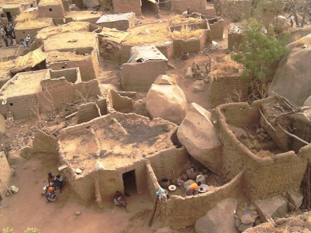

HAUTS-BASSINS


Situé à une dizaine de kilomètres à l’est de la ville de Bobo-Dioulasso, il est implanté sur une colline rocheuse à 3 Km à droite sur l’axe Bobo – Ouagadougou.
La population de KORO, composée de Bobo, Dioula, Peulh et Bobo-Dioula, est chiffrée à environ 30.000 habitants.
Le village est scindé en 2 parties : une partie paysanne et l’autre constituée de Forgerons.
Les paysans s’occupent des cultures pendant toute la période d’hivernage et ne rejoignent le village qu’au terme des activités agricoles.
Les forgerons fournissent les outils artisanaux ou agricoles nécessaires aux paysans.
Le village de Koro aurait été créé au XIème siècle par un chasseur appelé Guenelou Sanou, pour se mettre à l’abri des bêtes sauvages et des guerres. Le rocher le plus haut permet une vue très large et ainsi de voir venir l’ennemi. C’était aussi l’occasion de donner des nouvelles aux autres villageois.
A l’origine, seul le village d’en bas existait ; il a fallu ensuite se réfugier dans le village perché en période de troubles. Au XXème siècle, entre la fin de la colonisation et la fin des bêtes sauvages ; les habitants ont commencé à redescendre car l’eau et les terres agricoles se situent en bas de la colline. Dans la journée le village perché se vide de la majeure partie de ses habitants (commerce, école, agriculture, dolotières….) seuls restent les enfants en bas âge ou non scolarisés, leur mère, les potières, les forgerons et les personnes âgées.Ce village est construit de cases traditionnelles bobo reposant sur du granit. Actuellement encore, les fondations d’une case sont faites avec du granit.
A l’origine, le village perché était composé de 90% d’animistes avant l’arrivée des Dioula. Actuellement il est composé de trois quartiers très différents : Les agriculteurs, d’ethnie Bobo et de religion animiste (c’est le premier quartier que l’on rencontre lorsqu’on monte pour visiter le village) Les forgerons et les potières, d’ethnie Bobo et de religion musulmane Les commerçants, d’ethnie Dioula et de religion musulmane Ce quartier animiste compte des fétiches un peu partout sur les maison pour les protéger. Le fétiche principal (placé sur une sorte de pyramide) est le plus ancien du village et vise à protéger le lieu. La case à palabres se présente sous la forme d’un auvent bas de plafond dont l’accès est interdit aux femmes et aux non initiés (l’initiation est uniquement masculine et se fait à 20 ans). Le sol est couvert de grosses pierres de granit sur lesquelles prennent place le chef du village (sur la plus grosse pierre) et les vieux de chaque famille. cette case sert de palais du justice. Le plafond est volontairement très bas afin d’éviter les disputes et discussions trop animées lors de palabres ; difficile en effet de s’énerver sans se lever : la personne alors se cogne au plafond et se rassied.